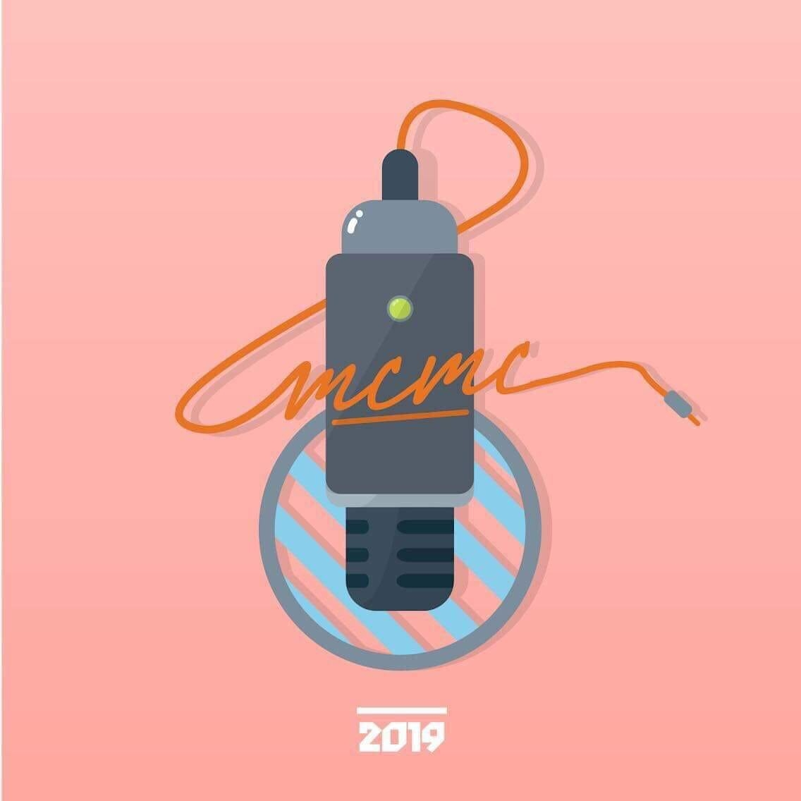
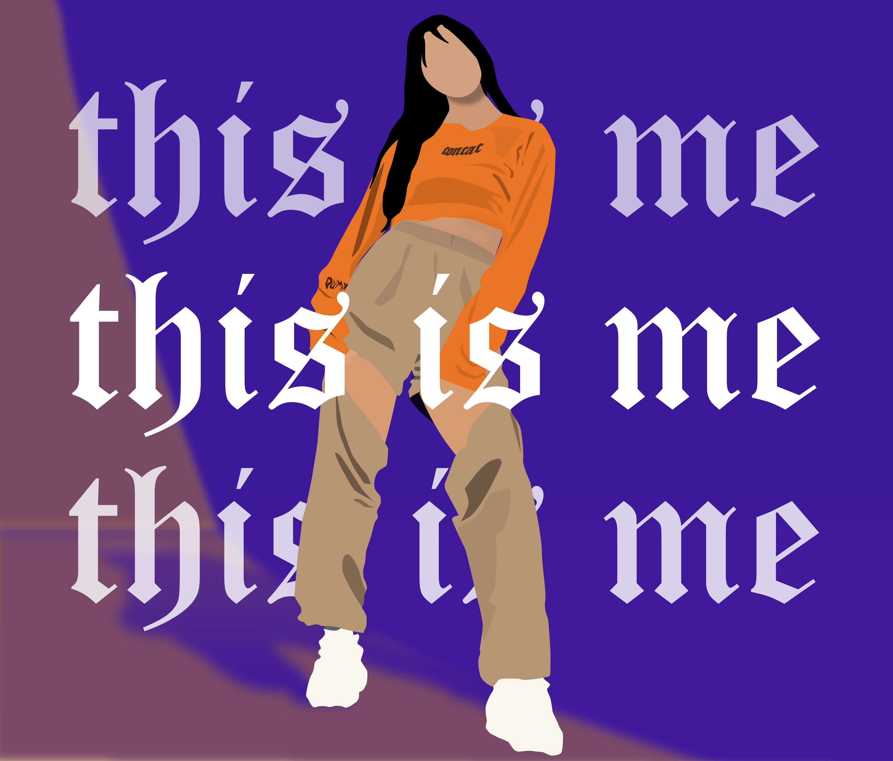
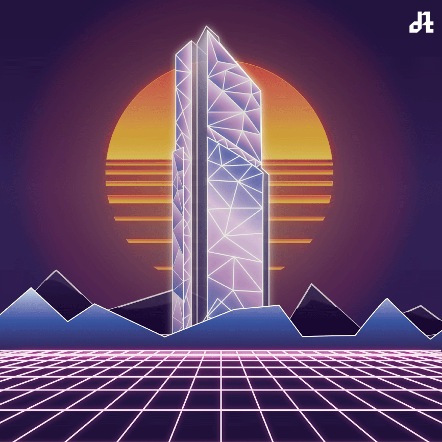
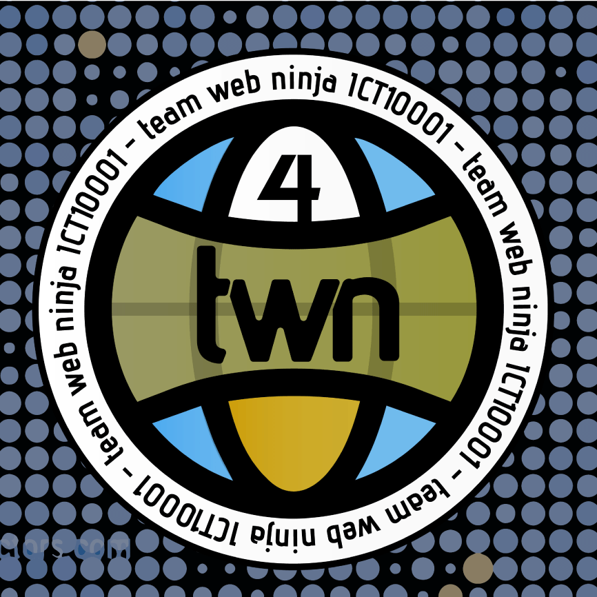
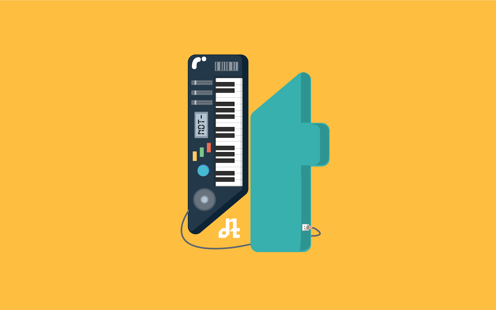
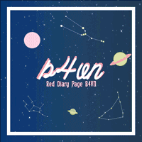
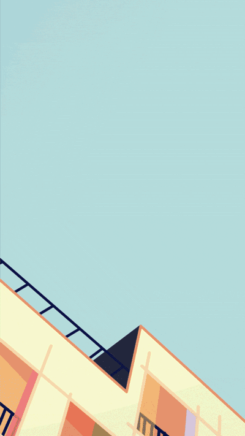
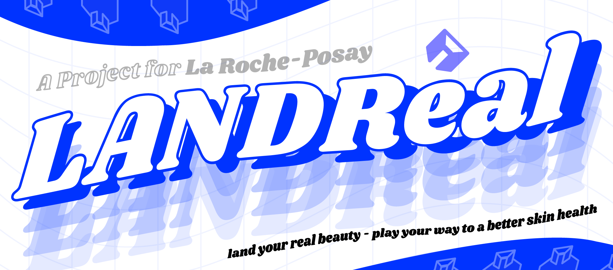
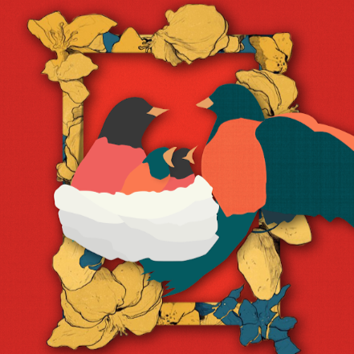

L'Oréal Brandstorm 2023 Participation
I and other two members from Swinburne University of Technology participated in L'Oréal's BRANDSTORM 2023 competition, where we utilised our knowledge within the field of technology to "have a crack at" a marketing competition. While helding low expectations, we aimed to produce an original, blockchain-driven and sustainable conceptual project. Thanks to Canva's Creative platform, we have produced a neat, eye-catching and informative creative pitch.
Link to the team's final creative pitch on Canva.
Drag this to get through this section
Digital Design Gallery
While I have devoted my life to the works of ICT, a portion of my heart belongs to graphical design. I am passionate to create and to govern the "beauty" aspects of digital creation. Such love has driven myself throughout the years of self-taught practices, and brought me to where I am now.
|  |  |  |
 |
 |  |
|  |  |  |
|  |
Courtesy of Tung Nguyen - 2023
Some images are large in size. Buffering expected.